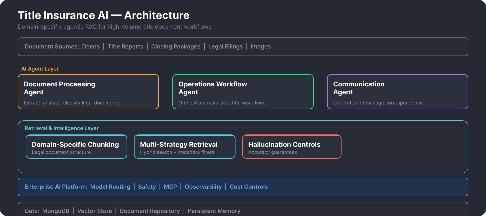

Overview
Designed and built a large-scale AI automation system for the title insurance business unit — one of the highest-volume, most document-intensive operations in the organization. The system processes thousands of legal and financial documents daily across examination workflows, closing coordination, and multi-party communications, backed by repositories spanning decades of unstructured records.
Deployed three specialized AI agents that perform multi-step reasoning across document sets, extract structured data from complex legal documents, and orchestrate downstream workflows. The architecture handles the unique challenges of this domain: hierarchical document structures that must be preserved during retrieval, regulatory accuracy requirements where errors have legal consequences, and strict data protection across a distributed system operating at enterprise scale.
Key Highlights
- Domain-Specific RAG — Custom retrieval pipeline tailored to legal document workflows where context preservation and extraction accuracy are critical.
- 3 Specialized Agents — Document processing, operations workflow, and communication agents handling distinct stages of the title lifecycle.
- Legal Document Intelligence — Domain-specific chunking strategies that preserve the hierarchical structure of title documents rather than treating them as flat text.
- Multi-Strategy Retrieval — Hybrid search with metadata-rich filtering across document hierarchies, combining vector, keyword, and structured metadata approaches.
- Multimodal Processing — Handles both text-based documents and scanned images with systematic hallucination controls and accuracy guarantees.
- MCP Integration — System integrations built on Model Context Protocol for composable, governed access to data sources and downstream systems.
- Privacy & Accuracy — Strict data protection invariants with distributed hybrid architecture balancing cloud scale and local privacy requirements.
Architecture

Impact
The Three Agents
Document Processing Agent
Handles extraction, analysis, and classification of incoming documents. Title workflows involve a wide range of document types — each with different structures, legal significance, and data extraction requirements. The agent applies domain-specific chunking that preserves document hierarchy (sections, clauses, exhibits) rather than naive text splitting, ensuring the retrieval layer returns contextually complete segments.
Operations Workflow Agent
Orchestrates multi-step title workflows that traditionally required manual coordination across teams. The agent reasons through workflow state, determines which steps can proceed based on document availability and validation results, and triggers downstream actions. Deterministic guardrails validate every step before anything is committed — the agent proposes, the system verifies.
Communication Agent
Generates and manages correspondence throughout the title process. Handles routine communications that previously required manual drafting, while enforcing compliance requirements and tone consistency. The agent adapts content based on context — transaction type, parties involved, jurisdiction — and routes through approval workflows for sensitive communications.
Retrieval & Intelligence Layer
Domain-Specific Chunking
Legal documents have structure that matters — a clause reference in section 4.2(b) needs to stay connected to the section it belongs to. The chunking strategy preserves this hierarchy, producing chunks that are both semantically meaningful and structurally coherent. This is fundamentally different from the general-purpose recursive text splitting used in most RAG implementations.
Multi-Strategy Retrieval
Combines dense vector search, keyword matching, and structured metadata filtering in a hybrid ensemble. The metadata layer is particularly important in this domain — documents can be filtered by type, date range, parties, jurisdiction, and recording references before semantic search even begins, dramatically reducing noise in the retrieval results.
Hallucination Controls
In a domain where inaccurate information can have legal and financial consequences, hallucination prevention is not optional. The system implements systematic controls: source document citation requirements, confidence thresholds for agent actions, and deterministic verification of extracted data against structured records.
Technical Approach
- Persistent Memory — Domain-wide memory enables agents to maintain context across related transactions and build institutional knowledge over time.
- MCP-Driven Integration — All system integrations — document repositories, workflow engines, communication systems — are connected via Model Context Protocol, providing governed, composable access.
- Hybrid Architecture — Distributed system balancing cloud-scale processing with local privacy requirements for sensitive document handling.
- Orchestrated Pipelines — Deterministic workflow orchestration ensuring consistent, auditable execution paths regardless of document volume.
Technologies
My Role
- Architecture & Design — designed the agentic RAG architecture tailored to the title domain's unique document processing and compliance requirements
- Hands-on Development — built the AI agents, retrieval pipelines, document processing logic, and MCP integrations
- Domain Collaboration — worked closely with title operations teams to translate business processes into agent workflows and retrieval strategies
- Scale & Reliability — ensured the system handles production-level document volumes with strict accuracy and data protection requirements